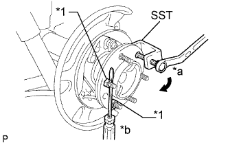
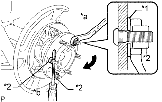

БОЛТ КРЕПЛЕНИЯ ЗАДНЕГО КОЛЕСА К СТУПИЦЕ > ЗАМЕНА |
| 1. СНИМИТЕ ЗАДНЕЕ КОЛЕСО |
| 2. СНИМИТЕ СТОЯНОЧНЫЙ ТОРМОЗ В СБОРЕ |
Снимите стояночный тормоз в сборе (Нажмите здесь).
| 3. ВЫВЕРНИТЕ БОЛТ КРЕПЛЕНИЯ ЛЕВОГО ЗАДНЕГО КОЛЕСА К СТУПИЦЕ |
|  |
Зафиксировав ступицу колеса с помощью SST и отвертки или аналогичного инструмента, выверните болт крепления колеса к ступице.
| *1 | Гайка |
| *a | Поверните |
| *b | Удерживайте |
| 4. ВВЕРНИТЕ БОЛТ КРЕПЛЕНИЯ ЛЕВОГО ЗАДНЕГО КОЛЕСА К СТУПИЦЕ |
|  |
Вставьте новый болт крепления колеса к ступице.
Предварительно установите шайбу и гайку ступицы на болт крепления колеса к ступице, как показано на рисунке.
| *1 | Шайба |
| *2 | Гайка |
| *a | Поверните |
| *b | Удерживайте |
Удерживая ступицу отверткой или аналогичным инструментом, поверните гайку ступицы до вступления в контакт нижней поверхности головки болта крепления колеса к ступице и ступицы колеса.
Отверните гайку ступицы и снимите шайбу.
| 5. УСТАНОВИТЕ СТОЯНОЧНЫЙ ТОРМОЗ В СБОРЕ |
Установите стояночный тормоз в сборе (Нажмите здесь).
| 6. УСТАНОВИТЕ ЗАДНЕЕ КОЛЕСО |